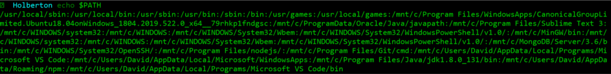
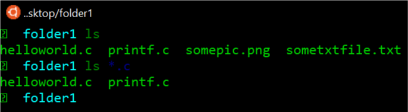

How to find all your .c files
I’m sure all of us, the first time we see some linux terminal with its green characters, think something related to hacking and believe the owner of that laptop been a total geek.
Let’s take it step by step
Well, when you go deep in tech industry, you realize despite the interface can be so shocking, it isn’t nothing from another world. By the fact, with time, it becomes your number one tool daily.
Let me try to explain you, as simple as possible, what a terminal is and how you can perform daily tasks faster. First of all, please don’t focus on visual part of terminals, please focus on what you can do with it.
What a terminal is and what it does?
A terminal is just a program that allow you to give your laptop, complex instructions just typing few lines. This instructions are commonly known as commands. If you don’t know how to open and terminal and start typing commands, you can find it in Windows OS searching cmd, for macOS with Spotlight search button, you are able to search “terminal” and open it. Finally if you use Linux OS, probably you know better than me. Now that we have open our terminal let’s see an example to see what we can do.
$ mkdir folder1
The command above “mkdir” (a stand of make directory) help you to create a new folder called “folder1”. (Just to be clear, you don’t type “$” symbol. You should see it when you open your terminal). It’s important that you know that after your command be execute, the bash will prompt again for a new command.
Before go deeper in ls command, I want that you know what PS1 and PATH variables is. PS1 just is a variable that holds how your shell command prompt. So the default PS1 variable shows you the user you login before and your current directory, and if you logged in user as normal or super user. Now, the $PATH variable holds a certain directories where shell will search for executable commands. Look and example of how $PATH variable looks like:
But there is also aliases. An alias is s command you define as a shortcut of some large command. For example:
$alias l="ls -al"
Now when you type “l” in your shell, you will be executing “ls -al”. Is important that you know the order shell try to find a command. First of all, shell look for aliases inside your terminal, if what you are typing doesn’t match with an alias, then the shell looks in build-in linux commands, searching if your first word match. If not, then shell look into $PATH variable.
Now yes, let’s go deeper. How can you see all files in our “folder1”
There is a command you can use to list your files, but it has a way to be used. The command is: ls (stands for list)
$ ls folder1
If you type ls command and then write folder name, it going to prints all your files and your directories (in the current directory “folder1”). But we can make use of special character to print out just certain type of files. This special character is “*”. With * becomes more easy to filter our list by filetype. How can you do that?
Before you type anything, please understand how “*” character works and how you can use wildcarts. Now, go to our main objective. List all our .c files
So, the wildcard we going is “.c”. It will tell to “ls” command that list just those files who ends with “.c”. When we use “”, doesn’t matter what is before the dot. Only matters that the end of the filename by “.c”. So, see the command below that should list all our c files in our current directory.
$ ls *.c
The output can be something similar to this.
So, as you can see, when I execute “ls *.c” the output are only .c files. Off course you can use it to print whatever filetype you want. I hope you have learn a little bit about terminal and how you can use ls command to print certain file types.